방송통신산업기사 (2012-10-06 기출문제)
1과목: 디지털 전자회로
1. 다음 중 정류기의 평활회로에 사용되지 않는 것은?
- 콘덴서
- 저항
- 쵸크코일
- 다이오드
(정답률: 71%)

2. 무부하일 때 출력이 50[V]인 직류전원장치가 있다. 1[kΩ] 부하저항을 연결했을 때 출력전압은 40[V]로 떨어졌다. 전압변동률은 백분율로 얼마인가?
- 10[%]
- 15[%]
- 20[%]
- 25[%]
(정답률: 43%)
3. 다음 그림의 회로는 두 개의 비반전 증폭기를 종속 접속한 것이다. 저항 10[kΩ]에 흐르는 전류 ID는 몇 [μA]인가? (단, 각 연산 증폭기는 이상적이다.)
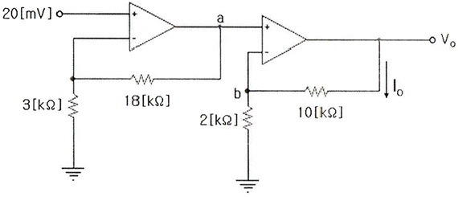
- 25[μA]
- 50[μA]
- 70[μA]
- 120[μA]
(정답률: 48%)
4. 다음 중 차동증폭기의 동상신호제거비 CMRR은? (단, Ac=동상전압이득, Ad=차동전압이득)
- 20 log (Ad/Ac)
- 10 log (Ad/Ac)
- 10 log (Ac/Ad)
- 20 log (Ac/Ad)
(정답률: 95%)
5. 다음 그림은 어떤 회로인가?
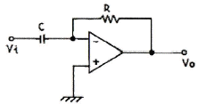
- 미분기
- 적분기
- 가산기
- 검파기
(정답률: 91%)
6. 푸시풀(push-pull) 트랜지스터 전력증폭기에서 바이어스를 완전 B급으로 하지 않은 이유는 무엇인가?
- 효율을 높이기 위해서
- 출력을 크게 하기 위해서
- 큰 위상 변화를 얻기 위해서
- 크로스오버(Cross-over) 왜곡을 줄이기 위해서
(정답률: 78%)
7. 다음은 콜피츠 발진회로이다. 발진주파수는 약 얼마인가?
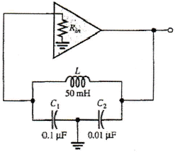
- 5.64[kHz]
- 6.46[kHz]
- 7.46[kHz]
- 8.64[kHz]
(정답률: 48%)
8. 정현파 발진기로서 부적합한 것은?
- CR 발진기
- 수정 발진기
- LC 발진기
- 멀티바이브레이터
(정답률: 62%)
9. 다음 중 PCM(펄스부호변조)의 설명으로 옳지 않은 것은?
- S/N비가 좋고 원거리통신에 유용하다.
- 신호파를 표본화시킨다.
- 고가의 여파기가 불필요하다.
- 표본화된 신호를 부호화한 다음에 양자화한다.
(정답률: 58%)
10. AM 변조에서 반송파 전력이 50[kW]일 때, 변조도 70[%]로 변조한다면 피변조파 전력 Pm은 몇 [kW]인가?
- 35.5
- 62.25
- 75.45
- 80.25
(정답률: 70%)
11. 슈미트 트리거 회로에서 최대 루프 이득을 1이 되도록 조정하면 어떻게 되는가?
- 회로의 응답속도가 떨어진다.
- 장시간 높은 안정도를 얻는다.
- 스스로 Reset 할 수 있다.
- 아날로그 정현파가 발생한다.
(정답률: 75%)
12. 다음 중 클리퍼 회로의 설명으로 옳은 것은?
- 입력 파형을 주어진 기준전압 레벨 이상 또는 이하로 잘라내는 회로
- 일정한 레벨 내에서 신호를 고정시키는 회로
- 특정 시각에 발진 동작을 시키는 회로
- 안정 상태와 준안정 상태를 번갈아 동작하는 회로
(정답률: 94%)
13. 다음의 논리회로도에서 드모르간(De-morgan)의 정리를 나타내는 것은 어느 것인가?
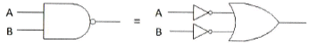
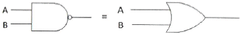
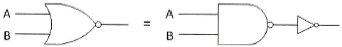
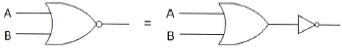
(정답률: 74%)
14. 동기식 순서 논리 회로를 바르게 설명한 것은 다음 중 어느 것인가?
- 여러 단의 순서 논리 회로가 한 개의 클록 신호를 공동 이용하여 동작하는 회로
- 여러 단의 순서 논리 회로가 전단의 출력 신호를 이용하는 회로
- 여러 단의 순서 논리 회로가 여러 개의 클록 신호를 이용하는 회로
- 여러 단의 순서 논리 회로가 클록과 출력 신호와는 무관하게 동작하는 회로
(정답률: 82%)
15. TTL(Transistor Transistor Logic) 회로의 특징이 아닌 것은?
- 집적도가 높다.
- 동작속도가 빠르다.
- 소비 전력이 비교적 적다.
- 온도의 영향을 적게 받는다.
(정답률: 87%)
16. 다음 중 디코더에 대한 설명으로 올바른 것은?
- n비트의 2진 코드를 최대 n개의 서로 다른 정보로 교환하는 조합 논리회로이다.
- 디코더에 Enable 단자를 가지고 있을 때, 디멀티플레서로 사용한다.
- IC 7485는 디코더로서 기능을 사용할 수 있다.
- 상용 IC 74138은 디코더와 디멀티플렉서의 기능을 모두 사용할 수 없다.
(정답률: 60%)
17. 연산 논리 장치라 하며 CPU 내에서 모든 연산이 이루어지는 곳을 무엇이라고 하는가?
- LSI
- ALU
- Accumulator
- Flag Register
(정답률: 69%)
18. 비교회로(Comparator)에 대한 설명 중 옳지 않은 것은?
- 2개의 입력을 비교하여 비교한 결과를 출력에 나타내는 회로이다.
- 출력의 종류는 3가지이다.
- 2개의 입력이 같은 값일 때 출력은 배타적 NOR(XNOR)로 표시된다.
- 2개의 입력이 다른 값일 때 출력은 배타적 OR(XOR)로 표시된다.
(정답률: 53%)
19. 일반적으로 카운터(counter)와 시프트 레지스터(shift register)의 차이점을 가장 잘 표현한 것은?
- 카운터에는 특정한 상태 순서가 있으나, 시프트 레지스터는 상태 순서가 없다.
- 카운터에는 특정한 상태 순서가 없으나, 시프트 레지스터는 상태 순서가 있다.
- 카운터와 시프트 레지스터는 데이터의 이동기능이 주된 목적이다.
- 카운터와 시프트 레지스터는 데이터의 저장기능이 주된 목적이다.
(정답률: 57%)
20. 전파정류회로에서 실효값을 나타내는 식은?
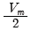
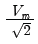
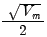
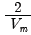
(정답률: 94%)
2과목: 방송통신 기기
21. 방송국설비 중 제작된 프로그램을 송신소나 방송위성국으로 송출하는 역할을 하는 곳은?
- 중계소
- 스튜디오
- 송신소
- 연주소
(정답률: 95%)
22. 방송국 내의 여러 개의 TV 카메라, 캠코더 등으로부터 발생되는 영상 신호들의 프레임을 일치시키기 위하여 사용되는 동기 기법을 무엇이라 하는가?
- 시간 축 교정(Time Base Correction)
- 수직 동기(Vertical Synchronization)
- 수평 동기(Horizontal Synchronization)
- 젠록(Genlock)
(정답률: 50%)
23. 방송국의 부조정실 기기 구성품이 아닌 것은?
- 스위처, 편집기
- 자동송출장비, 안테나
- CCU, VCR, CG
- 파형측정기, 믹서
(정답률: 89%)
24. 마이크의 지향성과 관계없는 것은?
- 전지향성
- 단일지향성
- 수직지향성
- 양지향성
(정답률: 93%)
25. 변조도가 60[%]인 AM 송신기에서 반송파의 평균전력이 500[mW]일 때 출력의 평균전력은?
- 460[mW]
- 520[mW]
- 590[mW]
- 700[mW]
(정답률: 100%)
26. 다음 중 AM 방송의 특징으로 옳지 않은 것은?
- 피변조파의 대역폭이 좁다.
- 피변조파 전력이 적다.
- 변복조 회로가 비교적 간단하다.
- 전송로의 진폭 잡음에 강하다.
(정답률: 85%)
27. 라디오에서 주파수변조방식(FM)의 특징이 아닌것은?
- 레벨 변동의 영향을 받는다.
- AM 방식보다 S/N 비가 좋다.
- 넓은 주파수 대역이 필요하다.
- AM 방식에 비해서 잡음이나 혼신에 강하다.
(정답률: 65%)
28. 칼라 TV의 휘도성분이 E=0.30ER+0.59EG+0.11EB 일 때 노란색의 출력은 얼마인가?
- 0.89
- 1.00
- 0.70
- 0.41
(정답률: 89%)
29. 다음 중 TV Analog 신호의 대역외 성분을 제거하는데 사용되는 필터는?
- LPF
- Comb Filter
- HPF
- 표본화 Filter
(정답률: 69%)
30. TV 수평해상도가 약 800라인일 때 영상신호의 최대주파수는 얼마인가?(단, NTSC 방식이며, 유효수평주사 시간은 53.5[μs]이다.)
- 약 4[MHz]
- 약 4[MHz]
- 약 10[MHz]
- 약 12[MHz]
(정답률: 54%)
31. ITU-R601(4:2:2) 콤포넌트 신호 중 휘도신호의 표본화 주파수(Luminance Sampling Rate)는 얼마인가?
- 3.58[MHz]
- 6.75[MHz]
- 13.5[MHz]
- 27[MHz]
(정답률: 77%)
32. 다음 중 위성방송을 위한 디지털변조 방식으로 가장 적합한 변조 방식은?
- ASK
- FSK
- QPSK
- VSB
(정답률: 63%)
33. 위성방송에서 사용되고 있는 Ku 대역의 상한/하한 주파수(IEEE 권고)는?
- 14/12[GHz]
- 6/4[GHz]
- 20/30[GHz]
- 12/14[GHz]
(정답률: 85%)
34. 10[dB] 감쇠를 주는 동축케이블의 손실률은?
- 약 3.2
- 약 4.3
- 약 5.5
- 약 6.0
(정답률: 74%)
35. 영상신호에서 Blanking level(귀선소거레벨)과 Reference white level(백색기준레벨) 사이의 차를 백분율로 표시되며 움직이는 물체를 주사하는 시간 동안의 Blanking levle에 대한 평균신호레벨을 나타내는 용어는 다음 중 어느 것인가?
- Blanking level
- Chroma Signal
- APL(Average picture level)
- VIR(Vertical interval reference)
(정답률: 77%)
36. 비디오 특성 측정에 사용되는 시험 패턴에서 멀티버스트 신호는 다음 중 어느 용도에 가장 적합한가?
- 주파수대 위상 측정
- 주파수대 진폭특성 측정
- 과도잡음 특성 측정
- 비직선 왜곡 측정
(정답률: 86%)
37. 다음 중 송출기 시험시 스퓨리어스 발사강도가 허용치 이내인지를 조사할 수 있는 장비는?
- 파형모니터
- 주파수 카운터
- 오실로스코프
- 스펙트럼 아날라이져
(정답률: 93%)
38. 다음 중 마젠타 색신호의 위상과 진폭 측정이 가능한 계측기는?
- 웨이브폼 모니터
- 벡터스코프
- 오실로스코프
- 스펙트럼 아날라이져
(정답률: 94%)
39. SYNC ANALYZER를 무엇이라 하는가?
- 동기신호분석기
- 동기신호복조기
- 동기신호분배기
- 동기신호분파기
(정답률: 79%)
40. 스펙트럼 아날라이져의 다이나믹 레인지란?
- 동시에 측정할 수 있는 최대 레벨의 신호와 최소 레벨 신호 사이의 범위
- 저역에서 고역까지 일정하게 재생할 수 있는 주파수 범위
- 신호의 일그러짐을 퍼센트[%]로 표시하는 범위
- 규정된 임피던스의 부하를 연속적으로 출력할 수 있는 파워의 최소 범위
(정답률: 65%)
3과목: 방송미디어 개론
41. 아날로그 TV 방송채널 3번은 주파수 대역이 60~66[MHz]이다. 이때 영상캐리어의 주파수는 몇 [MHz]인가?
- 60.53[MHz]
- 61.25[MHz]
- 64.83[MHz]
- 65.75[MHz]
(정답률: 89%)
42. 다음 중 인쇄 미디어인 잡지의 특성을 가장 바르게 표현한 것은?
- 속보성을 가진다.
- 시청각적이다.
- 디자인 의존도가 높다.
- 지역매체이다.
(정답률: 69%)
43. NTSC 방식의 수평주사선은 525 LINE이고 프레임(Frame) 주파수는 30[Hz], 필드(field) 주파수 FV=60[Hz]이다. 이때 수평주파수(Line frequency)는?
- 15.75[kHz]
- 16.75[kHz]
- 17.75[kHz]
- 18.76[kHz]
(정답률: 93%)
44. Color TV의 Color 성분 시험의 시험 신호로 쓰이지 않는 색은?
- Brown
- Magenta
- Cyan
- Yellow
(정답률: 79%)
45. 텔레비전 영상계에서 사용되는 3가지 기본 색상은?
- YELLOW, MAGENTA, CYAN
- RED, BLUE, GREEN
- WHITE, RED, BLACK
- CYAN, BLUE, YELLOW
(정답률: 94%)
46. 일반적으로 인터넷에 연결된 컴퓨터는 총 12자리의 숫자로 구성된 IP 주소를 갖는다. 이와 같은 IP 주소는 총 몇 비트로 구성되는가?
- 16비트
- 32비트
- 64비트
- 128비트
(정답률: 62%)
47. 다음 미디어가 잘못 짝지어진 것은?
- 신문 - 인쇄미디어
- 전화 - 음향미디어
- TV - 멀티미디어
- Telegram - 영상미디어
(정답률: 89%)
48. 디지털 코포지트 PAL이나 NTSC용 VTR 표준 19mm 테이프를 사용하며, 하나의 카세트테이프에 204분까지 녹화할 수 있는 디지털 비디오 테이프 기록의 한 형태는?
- D-1
- D-2
- D-3
- D-5
(정답률: 95%)
49. 다음 중 인터넷 메일을 보낼 때 사용하는 프로토콜이나 규칙의 집합을 의미하는 것은?
- URL
- SGML
- FTP
- SMTP
(정답률: 93%)
50. 뉴미디어 매체의 종류로 볼 수 없는 것은?
- VOD(Video On Demand)
- Internet
- 신문
- I-TV(Interactive TV)
(정답률: 95%)
51. 아날로그 TV에서의 문자방송에 대한 설명 중 틀린 것은?
- 영국 BBC에서 최초로 서비스를 시작하였다.
- 기존 TV와 양립성이 보장된다.
- 문자방송용 데이터는 TV의 음성신호에 다중화된다.
- 제어용으로도 사용이 가능하다.
(정답률: 73%)
52. “음향 5.1채널”에 포함되는 6개의 채널에서 다른 5개 채널과 구분되는 “.1” 채널은 다음 중 무엇인가?
- 좌측
- 좌측 서라운드
- 중앙
- 저대역효과 채널
(정답률: 100%)
53. 다음 중 멀티미디어 기술의 발전방향이 아닌것은?
- 고속화
- 네트워크화
- 표준화
- 기억용량의 소형화
(정답률: 70%)
54. 데이터방송에서 예를 들어, 음악프로그램을 시청하면서 출연가수의 신상 정보나 노래 가사 등의 정보를 시청할 수 있도록 하는 서비스는?
- 연동 정보서비스
- 독립 정보서비스
- 프로그램 가이드서비스
- 대형화 서비스
(정답률: 69%)
55. 다음 중 정재파비(VSWR)에 관한 설명으로 잘못된 것은?
- 수전단에서 반사가 많을수록 정재파비가 크다.
- 정재파비의 최소값은 0이다.
- 정재파비는 반사계수의 크기만의 함수이다.
- 이론적으로 정재파비는 무한대의 값을 가질 수 있다.
(정답률: 79%)
56. 다음 중 방송프로그램을 중계하기 위한 통신망을 구축할 때 검토할 사항이 아닌 것은?
- M/W 중계망인 경우 연주소와 송신소간의 가시거리 확보가능 여부
- 중계소의 중계망은 해당지역 주민 생활권을 피할 수 있는지 여부
- On-Air 중계 모국은 가능한 송신소 또는 기간중계소로 하되 불가피한 경우 간이국도 가능한지 여부
- On-Air 중계시 수신전계강도가 방송중계가 가능한지의 여부와 혼신유무 확인
(정답률: 56%)
57. 디지털 CATV나 이동통신 사업자가 게임, 은행 등의 서비스에 대해 미리 승인한 자료만 볼 수 있도록 허가하고 다른 자료에 대해서는 사용자의 접근을 제한하는 폐쇄된 네트워크 환경을 의미하는 용어는?
- VOD
- Walled Garden
- T-commerce
- Enhanced TV
(정답률: 71%)
58. SSM(Source Specific Multicast)가 기존 멀티캐스트 방식에 비해 장점이 아닌 것은?
- 관리의 용이성
- 구현의 용이성
- 주소할당 불필요
- 오류정정 필요성
(정답률: 100%)
59. 다음 전송 네트워크에서 CATV 방송망에 사용되는 전송망은?
- FTTH 망
- HFC 망
- XDSL 망
- ADSL 망
(정답률: 93%)
60. 중계 전송선로의 구성조건과 거리가 먼 것은?
- 광대역성
- 접속의 임의성
- 높은 신뢰성
- 낮은 손실성
(정답률: 85%)
4과목: 전자계산기 일반 및 방송설비기준
61. 2진수 (1111)2를 그레이 코드로 올바르게 표현한 것은?
- 1011
- 0001
- 1000
- 1010
(정답률: 58%)
62. 다음 중 연산논리장치(ALU)에서 산술연산의 설명으로 맞는 것은?
- 논리 수식의 참과 거짓을 판명하는 작업이다.
- 주로 사칙연산을 의미하며 정수 산술연산과 실수 산술연산으로 구분한다.
- 기본적으로 AND, OR gate로만 이루어진다.
- 연산 결과는 반드시 상태 레지스터에 저장된다.
(정답률: 67%)
63. 컴퓨터의 하드웨어 구성 중 중앙처리장치에 해당되는 것은?
- 제어장치
- 입출력장치
- 보조기억장치
- 주기억장치
(정답률: 47%)
64. 다음 중 RFID에 대한 설명으로 틀린 것은?
- 일반적으로 많이 사용하는 식별 시스템으로는 바코드, OCR, 비디오 영상 방식 등이 많이 알려져 왔다. 그 중 대표적인 최근 기술이 RFID이다.
- RFID는 가청 주파수대역인 무선 주파수(MHz, GHz)와 제품에 붙이는 전자태그를 이용하여 물체(물건, 사람 등)를 식별할 수 있는 기술이다.
- RFID는 자체 안테나에 없으며, 리더로 하여금 이 정보를 읽고 다양한 유ㆍ무선 네트워크를 통해 정보시스템과 통합하여 사용되는 시스템을 말한다.
- RFID 시스템은 하드웨어(태그, 리더기, 안테나, 호스트 컴퓨터)와 소프트웨어(운영체제, 미들웨어, 호스트 어플리케이션)로 구성된다.
(정답률: 100%)
65. 다음 중 마이크로프로세서의 연산단위가 아닌것은?
- 8bit
- 16bit
- 24bit
- 32bit
(정답률: 95%)
66. 8bit 마이크로프로세서의 특징이 아닌 것은?
- 한번에 처리하는 정보의 크기가 8bit임을 의미한다.
- 8bit로 CPU 내에 전송된 데이터는 8bit 크기의 레지스터에 저장된다.
- CPU 내의 여러 연산을 이용할 때 8bit의 크기로 이용된다.
- 대부분 데이터버스 크기는 8bit, 주소 버스 크기도 8bit을 가진다.
(정답률: 85%)
67. 다음 연산을 1의 보수를 이용하여 계산할 결과로 옳은 것은?
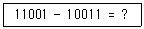
- 01100
- 00101
- 00110
- 01010
(정답률: 75%)
68. 다음 운영체제의 목적 중에서 “원하는 시간 내에 시스템을 얼마나 빨리 사용할 수 있는가”의 정도를 나타내는 것은 무엇인가?
- 처리능력(Throughput)의 향상
- 응답시간(Turn-Around Time)의 단축
- 사용가능도(Availability)의 향상
- 신뢰도(Reliability)의 향상
(정답률: 100%)
69. 다음 중 마이크로프로세서의 명령어인 Stack, Queue의 설명으로 잘못된 것은?
- Stack은 처음 저장했던 순서대로 상자에서 나온다.
- Queue는 FIFO(First-In First-Out)라고도 한다.
- Stack는 처음 저장했던 데이터는 가장 마지막에 나온다.
- Stack는 LIFO(Last-In First-Out)라고도 한다.
(정답률: 74%)
70. 인터럽트 우선순위 방식이 아닌 것은?
- Subroutine Call
- Polling
- Priority Encoder
- Daisy Chain
(정답률: 48%)
71. 수신안테나로부터 들어오는 각 채널별 텔레비전 방송신호의 세기의 차이가 몇 데시벨을 넘는 경우에 레벨조정기를 사용하여야 하는가?
- 3[dB]
- 6[dB]
- 9[dB]
- 12[dB]
(정답률: 45%)
72. 다음 중 방송통신위원회에 허가신청서를 제출해야 하는 사업이 아닌 것은?
- 종합유선방송사업
- 전광판사업
- 중계유선방송사업
- 위성방송사업
(정답률: 94%)
73. 방송의 공정성과 공익성에 대한 설명으로 옳지 않는 것은?
- 방송은 국민의 국제여론 및 복지증진에 이바지하여야 한다.
- 방송은 표준말 보급에 이바지하여야 하며 언어순화에 힘써야 한다.
- 방송은 국민의 알 권리와 표현의 자유를 보호ㆍ신장하여야 한다.
- 방송에 의한 보도는 공정하고 객관적이어야 한다.
(정답률: 62%)
74. 다음 중 “텔레비전방송”의 정의로 올바른 것은?
- 정지 또는 이동하는 사물의 순간적 영상과 이에 따르는 음성ㆍ음향 등을 보내는 방송을 말한다.
- 데이터와 이에 따르는 영상ㆍ음성ㆍ음향 등을 보내는 방송을 말한다.
- 특수한 목적을 수행하기 위하여 허가받은 방송국이 행하는 무선통신의 송신을 말한다.
- 방송사항의 제작ㆍ편성 및 조정에 필요한 설비와 그 종사자의 총체를 말한다.
(정답률: 57%)
75. “유선, 무선, 광선 그 밖의 전자적 방식으로 부호ㆍ문자ㆍ음향 또는 영상 등의 정보를 저장ㆍ제어ㆍ처리하거나 송ㆍ수신하기 위한 기계ㆍ기구ㆍ선로 및 그 밖에 필요한 설비”를 무엇이라 하는가?
- 정보통신설비
- 무선설비
- 방송설비
- 전기설비
(정답률: 85%)
76. 종합유선방송설비와 공동시청안테나의 증폭기ㆍ분배기 또는 분기기 등은 상호 신호의 간섭이 없도록 장치함에 수용하여야 하는데 다음중 설치위치가 아닌 것은?
- 장치함은 내부에는 보조판넬ㆍ시건장치와 통풍구 등을 설치할 것
- 장치함과 장치함 간은 성형배선이 가능한 구조로 구성하며, 가정에서 관리하기 위하여 가정내부에 설치할 것
- 장치함의 크기는 증폭기, 분배기, 분기기, 보호기 및 케이블 등 필요한 설비를 수용할 수 있는 충분한 공간을 확보하도록 할 것
- 인입용 종합유선방송설비와 옥내전송선로설비가 최초로 접속되는 위치의 장치함은 주장치함으로서 관로의 분계점에서 가장 가까운 곳에 설치할 것
(정답률: 63%)
77. 다음 중 지상파방송사업을 하기 위해서 최초로 어디에 허가를 신청하여야 하는가?
- 문화체육관광부
- 방송통신위원회
- 방송사업위원회
- 유선방송위원회
(정답률: 87%)
78. 다음 주파수대의 주파수 범위와 미터표시에서 틀리게 연결된 것은?
- 300[kHz] 초과 3,000[kHz] 이하 - 센티미터파
- 20[MHz] 초과 300[Mhz] 이하 - 미터파
- 300[MHz] 초과 3,000[MHz] 이하 - 데시미터파
- 30[kHz] 초과 300[kHz] 이하 - 킬로미터파
(정답률: 100%)
79. 방송통신위원회가 고시하는 공동주택에 설치하는 설비에 해당되는 것은?
- 중파라디오방송 공동수신안테나
- 에이엠(AM) 라디오방송 공동수신안테나
- 종합유선방송의 구내전송선로설비
- 라디오유선방송 공동수신설비
(정답률: 43%)
80. 유선방송시설의 설치도면에서 다음 기호의 명칭은?
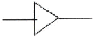
- 증폭기(Amplifier)
- 분기증폭기(Bridging Amp)
- 채널변환장치(Convertor)
- 주전종장치(Head End)
(정답률: 79%)